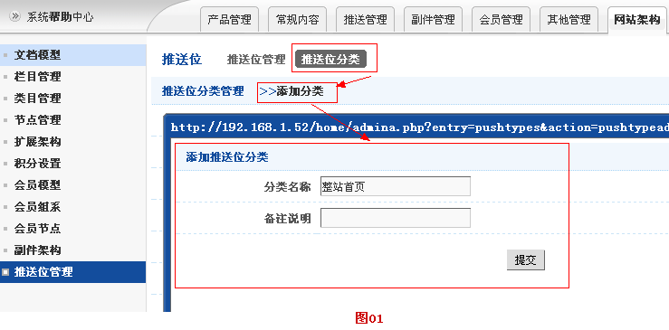
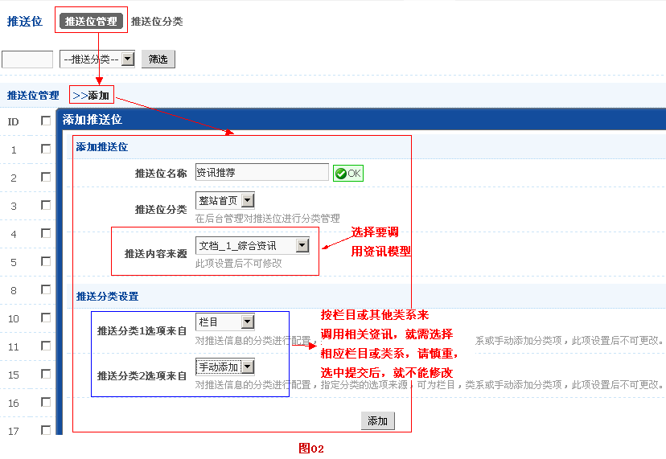
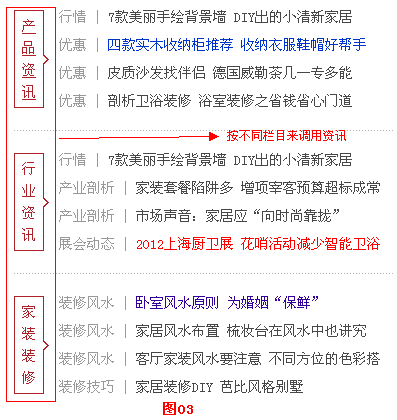
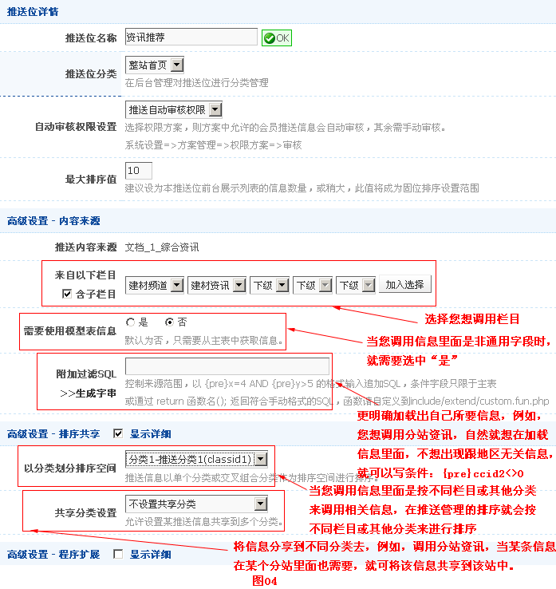
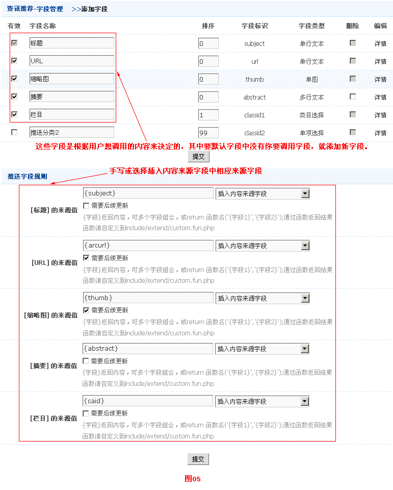
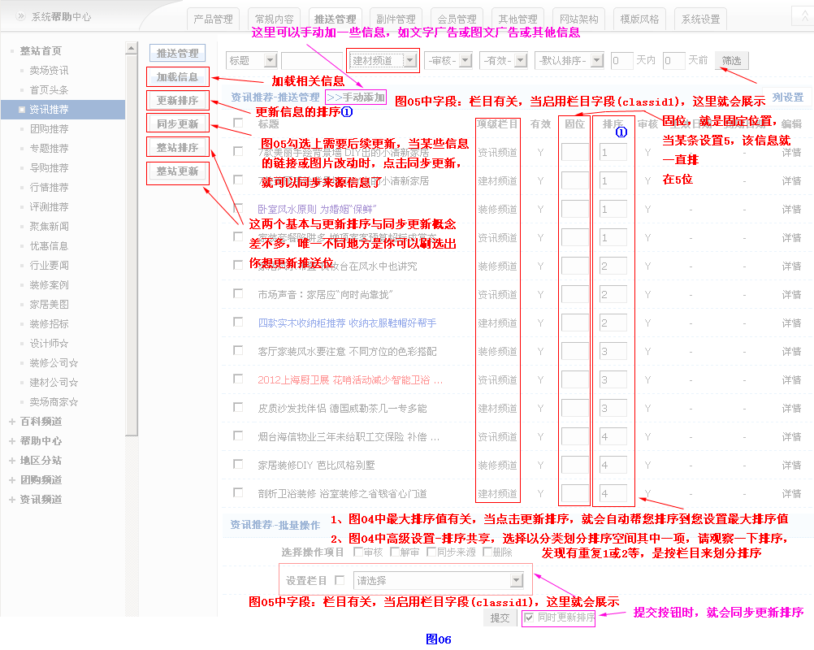
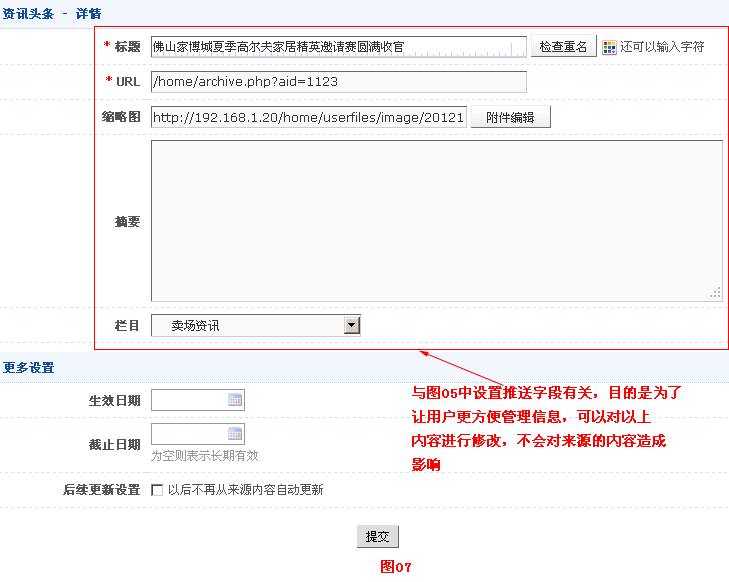

推送管理
一、前言
为了方便用户更好地管理推荐信息（例如：头条、推荐、图文等信息），可避免重复性，可手动或自动对相关信息排序和共享资料，可在信息中插入广告。
二、推送位管理
- 2.1推送位管理的设置
-
为大家详细地介绍推送位管理（网站架构->推送位管理）整个过程，步骤如下：
步骤一、先添加推送位分类（网站架构->推送位管理->推送位分类->添加分类->弹出添加窗口，添加分类名称和备注说明[可不填]->提交），如图01所示

步骤二、添加推送位，（网站架构->推送位管理->添加->弹出添加窗口，根据自己需要填写 ->提交）如图02所示

其中推送分类设置下的设置，特别说明：在做模板时，调用信息里面有相关栏目或其他类系，就需要进行设置，例如，按不同栏目来调用资讯（如图03），就在推送分类1选项来自那选中栏目。

步骤三、添加完推送位，设置相关信息，如图04所示

步骤四、添加完好推送位后，就进行字段设置（找到相应推送位->点击字段），如图05所示。

- 2.2推送位管理的用法
- 以上推送位步骤设置完毕后，就到推送位管理那管理相关的推送位，要是在左侧栏没有看到您添加推送分类或推送位，就在左侧栏那，右击鼠标，选择重新载入。以下为大家介绍一下推送管理，如图06所示。

推送管理->相应推送位->详情，如图07所示。
